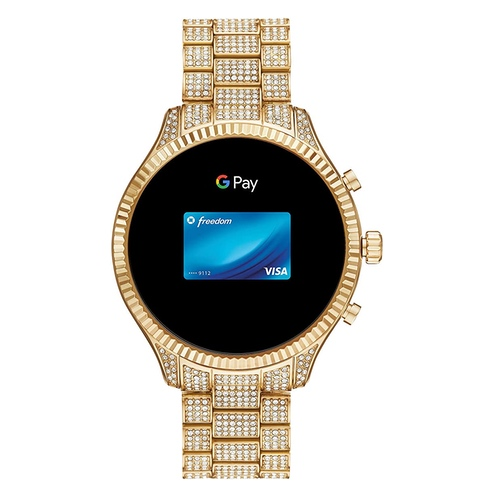

Michael Kors Gen 2 Lexigton connected smartwatch with wear OS by google and loudspeaker, GPS, Heart rate and smartphone Notifications.
Designed in stainless steel, the bestselling Lexigton 2 is the ideal go-to, wether you're dressing up for a night out or keeping it casual for your morning flight. Talk with your Google Assistant, get sound alerts for your notifications and play music directly from your smartwatch. With 8GBof storage, you can download even more content while increased memory improves overall perfomance. Utilizing the Qualcomm snapdragon Wear 3100, a new ultra-low power system is designed to deliver enhaced ambient modes and extended battery life. Smartwatches powered with OS by Google are compatible with iPhone and Android phones. Wear OS by Google and other related marks are trademarks of Google LLC. Touchscreens smartwatches powered with wear OS by Google works with phones running Android 6.0+(excluding Go edition) and IOS 10.0+. Supported features may vary between platforms and countries. To avoid damage to your watch, only use with included charger. Do not use a USB hub, USB y-cable, battery pack or other peripheral devices to charge. Product should be kept more than 20cm away from implanted medical devices to minimize potential for RF interference. See product insert for full details.
About this item
Watch Information
| Brand name | Model number | Part number | Model year | Item shape | Dial Window Material Type | Display Type | Clasp Type | Case Material | Case Diameter | Case Size | Case Thickness |
|---|---|---|---|---|---|---|---|---|---|---|---|
| Micael Kors | MKT5081 | MKT5081 | 2019 | Round | Mineral | Digital | Folding closure with double pushbutton protection | Stainless steel | 44 millimetres | millimetres | 8 millimetres |
| Band Material | Band Length | Band Width | Band Colour | Dial Colour | Bezel Material | Bezel Function | Calender | Special Features | Weight | Movement | Water Pressure Resistance | Warranty Type | Warranty |
|---|---|---|---|---|---|---|---|---|---|---|---|---|---|
| Stainless steel | Women's standard | 20 millimetres | Rotgold | Black | Stainless steel | Unidirectional | Day-Date-Month | Alarm, Compass & GPS, Mutual Time Zone, Stop Watch, Bluetooth | 200 Grams | Touchscreen | 5.00 atmosphere | Manufacturer | If this product is sold by Amazon, please review the manufacturer's website for warranty information. If this product is sold by another party, please contact the seller directly for warranty information for this product. You may also be able to find warranty information on the manufacturer's website. |
Product Details
Price in rands: R638,066
Price in pounds: 313,99
Stock available: 35 watches